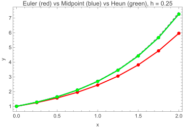

f[x_, y_] := Sin[x + y]5 Second-Order Runge-Kutta — A Family of Methods
Euler’s method is first-order accurate: halving the step size halves the global error. This chapter asks a natural question: can we do better without a fundamentally different strategy? The answer is yes — and the improvement costs exactly one additional evaluation of \(f\) per step. By sampling the slope at a carefully chosen second point inside the interval \([x_n, x_{n+1}]\), we can cancel the leading error term and achieve second-order accuracy. The surprising result is that there is not one second-order method but an entire family of them, parameterized by a single free constant. This chapter derives that family systematically and shows two of its most important members.
5.1 The Core Idea: Estimate the Slope at a Second Point
Euler’s method uses only the slope at the left endpoint of each interval:
\[y_{n+1} = y_n + h \cdot f(x_n, y_n)\]
The truncation error is \(O(h^2)\) per step because the method matches only the first two terms of the Taylor series: the constant term and the \(h \cdot y'(x_n)\) term. The \(h^2\) term and everything above it are discarded.
The key insight for improvement: instead of using only the slope at \(x_n\), what if we took a preliminary half-step to estimate where the solution will be at \(x_n + h/2\), then used the slope at that midpoint for the actual update? Geometrically, the slope at the midpoint of the interval is a better approximation to the average slope over \([x_n, x_{n+1}]\) than the slope at the left endpoint alone.
This intuition can be made precise. The two-variable Taylor series (established in Chapter 3) lets us expand \(f\) at any nearby point and compare the result term by term with the exact Taylor series for \(y(x_n + h)\). When the terms match through \(h^2\), the method is second-order accurate. The question is: what constraints must the coefficients satisfy to force that match?
5.2 The General Two-Stage RK Scheme
A two-stage Runge–Kutta method uses two slope evaluations per step. Following the unifying structure from Section 4.1, the update formula is:
\[y_{n+1} = y_n + h\,(b_1 \cdot k_1 + b_2 \cdot k_2)\]
where the two slopes are:
\[k_1 = f(x_n,\ y_n)\]
\[k_2 = f(x_n + c_2 \cdot h,\ y_n + a_{21} \cdot h \cdot k_1)\]
The unknown coefficients are \(b_1\), \(b_2\), \(c_2\), and \(a_{21}\). There are four of them but, as we will see, only three independent equations. That underdetermination is precisely what produces the “family” of methods.
The subscript convention for the coefficients follows the Butcher tableau introduced in Section 5.10: \(b_i\) are the weights, \(c_i\) are the stage positions along the \(x\)-axis, and \(a_{ij}\) are the coupling coefficients that determine how each stage depends on earlier stages.
5.3 Expanding the Second Stage with the Two-Variable Taylor Series
To find what constraints the order conditions impose on our four coefficients, we need to expand \(k_2\) around \((x_n, y_n)\). This is exactly the two-variable Taylor expansion from Chapter 3, applied to \(f\) at the point \((x_n + c_2 h,\ y_n + a_{21} h k_1)\):
\[k_2 = f(x_n, y_n) + c_2 \cdot h \cdot f_x + a_{21} \cdot h \cdot k_1 \cdot f_y + O(h^2)\]
Since \(k_1 = f(x_n, y_n)\), the expansion simplifies to:
\[k_2 = f + c_2 \cdot h \cdot f_x + a_{21} \cdot h \cdot f \cdot f_y + O(h^2)\]
where \(f\), \(f_x\), and \(f_y\) are all evaluated at \((x_n, y_n)\) and the \(O(h^2)\) terms involve second-order partial derivatives.
Substituting this expansion into the update formula gives the numerical increment as a power series in \(h\). We will use Wolfram Language to perform this expansion symbolically and then compare it term by term with the exact Taylor series for \(y(x_n + h)\).
First, let’s set up the symbolic framework. We treat \(f\) as an abstract function and let WL expand everything:
expandK2[c2_, a21_] :=
Normal[Series[
f[x + c2*h, y + a21*h*f[x,y]],
{h, 0, 2}]]expandK2[c2, a21]![Output]()
The output shows \(k_2\) as \(f + h\,(c_2\, f_x + a_{21}\, f\, f_y) + O(h^2)\). Now we form the full two-stage increment \(b_1 k_1 + b_2 k_2\) and compare it to the exact Taylor series for \(y(x + h)\).
exactIncrement = f[x, y] + (h/2)*(D[f[x,y],x] + f[x,y]*D[f[x,y],y]);numericalIncrement[b1_, b2_, c2_, a21_] :=
b1*f[x,y] + b2*expandK2[c2,a21];5.4 Matching Coefficients: The Order Conditions for RK2
For the two-stage method to be second-order accurate, the numerical increment \(h\,(b_1 k_1 + b_2 k_2)\) must match the Taylor expansion of \(y(x_n + h)\) through terms of order \(h^2\). We compare the two expansions term by term.
The exact Taylor expansion of \(y(x_n + h)\) uses the chain rule. Since \(y'(x) = f(x, y(x))\), the second derivative is:
\[y''(x) = \frac{d}{dx} f(x, y(x)) = f_x + f_y \cdot y'(x) = f_x + f_y \cdot f\]
So the exact Taylor expansion through \(h^2\) is:
\[y(x_n + h) = y_n + h \cdot f + \frac{h^2}{2} \cdot (f_x + f_y \cdot f) + O(h^3)\]
The numerical increment \(h\,(b_1 k_1 + b_2 k_2)\), expanded using our \(k_2\) expansion, gives:
\[h\,(b_1 \cdot k_1 + b_2 \cdot k_2) = h\,(b_1 + b_2)\, f + h^2\,(b_2\, c_2\, f_x + b_2\, a_{21}\, f\, f_y) + O(h^3)\]
Matching this with the exact Taylor expansion, term by term:
Coefficient of \(h\) (must match \(f\)):
\[b_1 + b_2 = 1\]
Coefficient of \(h^2 \cdot f_x\) (must match \(1/2\)):
\[b_2 \cdot c_2 = \frac{1}{2}\]
Coefficient of \(h^2 \cdot f \cdot f_y\) (must match \(1/2\)):
\[b_2 \cdot a_{21} = \frac{1}{2}\]
These are the three order conditions for RK2.
5.5 One Set of Conditions, Infinitely Many Solutions
We have three equations and four unknowns:
\[b_1 + b_2 = 1, \qquad b_2 \cdot c_2 = \tfrac{1}{2}, \qquad b_2 \cdot a_{21} = \tfrac{1}{2}\]
Four unknowns, three equations: the system is underdetermined by one degree of freedom. Choosing any value of \(b_2\) (other than 0) uniquely determines the remaining three:
\[b_1 = 1 - b_2, \qquad c_2 = \frac{1}{2 b_2}, \qquad a_{21} = \frac{1}{2 b_2}\]
This is the “RK2 family”. Every choice of \(b_2 \in (0, 1]\) produces a distinct but equally valid second-order Runge–Kutta method. WL confirms this:
Solve[
{b1 + b2 == 1,
b2*c2 == 1/2,
b2*a21 == 1/2},
{b1, c2, a21}]![Output]()
The output is {b1 -> 1 - b2, c2 -> 1/(2 b2), a21 -> 1/(2 b2)}. The single free parameter \(b_2\) indexes the entire family. Two canonical choices are \(b_2 = 1\) (the Midpoint Method) and \(b_2 = 1/2\) (Heun’s Method). Both are genuinely different algorithms but both are second-order accurate.
5.6 The Midpoint Method: One Choice of Solution
Setting \(b_2 = 1\) gives \(b_1 = 0\), \(c_2 = 1/2\), \(a_{21} = 1/2\), placing the second stage exactly at the midpoint:
\[k_1 = f(x_n,\ y_n)\]
\[k_2 = f\!\left(x_n + \tfrac{h}{2},\ y_n + \tfrac{h}{2} \cdot k_1\right)\]
\[y_{n+1} = y_n + h \cdot k_2\]
The method takes a half-step (\(h/2\)) to estimate the solution at the midpoint, evaluates \(f\) there, then uses that midpoint slope to advance the full step. The first slope \(k_1\) is used only to locate the midpoint — it does not appear in the final update. This is why \(b_1 = 0\).
Implementation in Wolfram Language:
f[x_, y_] := y
exactSolution[x_] := Exp[x]
x0 = 0; y0 = 1; xEnd = 2;midpointStep[fx_, x_, y_, h_] :=
Module[{k1, k2},
k1 = fx[x, y];
k2 = fx[x + h/2, y + (h/2)*k1];
y + h*k2]midpointMethod[fx_, x0_, y0_, xEnd_, h_] :=
Module[{xc = x0, yc = y0, pts = {{x0, y0}}},
While[xc < xEnd - h/2,
yc = midpointStep[fx, xc, yc, h];
xc = xc + h;
AppendTo[pts, {xc, yc}]];
pts]midpointSol = midpointMethod[f, 0, 1, 2, 0.5];
Last[midpointSol][[2]] - Exp[2]-0.416156
5.7 Heun’s Method (Improved Euler): Another Choice
Setting \(b_2 = 1/2\) gives \(b_1 = 1/2\), \(c_2 = 1\), \(a_{21} = 1\). The second stage is now at \(x_n + h\) (the right endpoint of the interval), and the update uses the average of the slopes at the left and right endpoints:
\[k_1 = f(x_n,\ y_n)\]
\[k_2 = f(x_n + h,\ y_n + h \cdot k_1)\]
\[y_{n+1} = y_n + \frac{h}{2}\,(k_1 + k_2)\]
Heun’s method has a predictor–corrector interpretation: \(k_1\) is an Euler “predictor” step to estimate \(y_{n+1}\), then \(k_2\) re-evaluates \(f\) at that predicted point to “correct” the slope. The final update averages the two slopes. This interpretation is not just a mnemonic — it is the exact geometric content of setting \(c_2 = 1\) in the general scheme.
heunStep[fx_, x_, y_, h_] :=
Module[{k1, k2},
k1 = fx[x, y];
k2 = fx[x + h, y + h*k1];
y + (h/2)*(k1 + k2)]heunMethod[fx_, x0_, y0_, xEnd_, h_] :=
Module[{xc = x0, yc = y0, pts = {{x0, y0}}},
While[xc < xEnd - h/2,
yc = heunStep[fx, xc, yc, h];
xc = xc + h;
AppendTo[pts, {xc, yc}]];
pts]heunSol = heunMethod[f, 0, 1, 2, 0.5];
Last[heunSol][[2]] - Exp[2]-0.416156
5.8 Implementing and Comparing Both in Wolfram Language
We now compare Euler, Midpoint, and Heun on the test problem \(dy/dx = y\), \(y(0) = 1\) over \([0, 2]\) with step size \(h = 0.25\).
eulerStep[fx_, x_, y_, h_] := y + h*fx[x, y]
eulerMethod[fx_, x0_, y0_, xEnd_, h_] :=
Module[{xc = x0, yc = y0, pts = {{x0, y0}}},
While[xc < xEnd - h/2,
yc = eulerStep[fx, xc, yc, h];
xc = xc + h;
AppendTo[pts, {xc, yc}]];
pts]hCmp = 0.25;
eulerSol = eulerMethod[f, 0, 1, 2, hCmp];
midSol = midpointMethod[f, 0, 1, 2, hCmp];
heunSol = heunMethod[f, 0, 1, 2, hCmp];
cmpFig = Show[
Plot[Exp[x], {x, 0, 2}, PlotStyle -> {Gray, Dashed}],
ListLinePlot[eulerSol, PlotStyle -> {Red, Thick}, Mesh -> All],
ListLinePlot[midSol, PlotStyle -> {Blue, Thick}, Mesh -> All],
ListLinePlot[heunSol, PlotStyle -> {Green, Thick}, Mesh -> All],
Frame -> True, FrameLabel -> {"x", "y"},
PlotLabel -> Style[
"Euler (red) vs Midpoint (blue) vs Heun (green), h = 0.25", 12]];
Export["05_RK2/euler-vs-rk2.pdf", cmpFig];
Export["05_RK2/euler-vs-rk2.svg", cmpFig];
{{"Euler", Last[eulerSol][[2]] - Exp[2]},
{"Midpoint", Last[midSol][[2]] - Exp[2]},
{"Heun", Last[heunSol][[2]] - Exp[2]}}{{Euler, -1.42859}, {Midpoint, -0.126809}, {Heun, -0.126809}}With \(h = 0.25\), Euler’s error should be roughly four times larger than Midpoint’s or Heun’s — consistent with Euler being \(O(h)\) and the others \(O(h^2)\).
5.9 Error Analysis: Confirming Second-Order Convergence
A method is second-order if halving \(h\) reduces the global error by a factor of \(4\) (since \((h/2)^2 = h^2/4\)). We verify this by computing the error at \(x = 2\) for a sequence of step sizes and checking the ratio of successive errors.
hValues = {0.5, 0.25, 0.125, 0.0625, 0.03125};
eurErrors = Table[
Abs[Last[eulerMethod[f, 0, 1, 2, hv]][[2]] - Exp[2]],
{hv, hValues}];
midErrors = Table[
Abs[Last[midpointMethod[f, 0, 1, 2, hv]][[2]] - Exp[2]],
{hv, hValues}];
heunErrors = Table[
Abs[Last[heunMethod[f, 0, 1, 2, hv]][[2]] - Exp[2]],
{hv, hValues}];eurRatios = Prepend[Rest[eurErrors] / Most[eurErrors], "---"];
midRatios = Prepend[Rest[midErrors] / Most[midErrors], "---"];
heunRatios = Prepend[Rest[heunErrors] / Most[heunErrors], "---"];
TableForm[
Transpose[{hValues, N[eurErrors, 4], eurRatios,
N[midErrors, 4], midRatios,
N[heunErrors, 4], heunRatios}],
TableHeadings -> {None,
{"h", "Euler err", "ratio", "Midpoint err", "ratio",
"Heun err", "ratio"}}]![Output]()
The ratio columns confirm the order: Euler’s ratios approach \(2\) (first-order, since halving \(h\) halves the error), while Midpoint and Heun’s ratios approach \(4\) (second-order, since halving \(h\) quarters the error). Both RK2 methods achieve the same asymptotic convergence rate despite their different formulas.
5.10 The Butcher Tableau: A Compact Notation for RK Methods
The general two-stage RK scheme involves four coefficients: \(b_1\), \(b_2\), \(c_2\), and \(a_{21}\). As we move to three-stage (Chapter 6) and four-stage (Chapter 7) methods, the number of coefficients grows rapidly. Writing out every formula in full becomes unwieldy. The Butcher tableau is a compact notation that organizes all coefficients of any explicit RK method in a single structured array.
The tableau for a two-stage method looks like this:
\[\begin{array}{c|cc} 0 & & \\ c_2 & a_{21} & \\ \hline & b_1 & b_2 \end{array}\]
The left column holds the \(c_i\) values (stage positions), the main body holds the \(a_{ij}\) coupling coefficients, and the bottom row holds the \(b_i\) weights. For explicit methods, the \(a\) matrix is strictly lower triangular: each stage only depends on stages that came before it.
The Midpoint Method tableau (\(b_2 = 1\), \(c_2 = 1/2\), \(a_{21} = 1/2\)):
\[\begin{array}{c|cc} 0 & & \\ \tfrac{1}{2} & \tfrac{1}{2} & \\ \hline & 0 & 1 \end{array}\]
Heun’s Method tableau (\(b_2 = 1/2\), \(c_2 = 1\), \(a_{21} = 1\)):
\[\begin{array}{c|cc} 0 & & \\ 1 & 1 & \\ \hline & \tfrac{1}{2} & \tfrac{1}{2} \end{array}\]
The tableau encodes the entire algorithm. Given the tableau, you can reconstruct the formulas for \(k_1\), \(k_2\), and \(y_{n+1}\) mechanically. Given the formulas, you can fill in the tableau mechanically. The two representations carry identical information; the tableau is simply more compact.
This is pure notation — no new mathematics is introduced here. The same Taylor expansion logic from Sections 5.3 and 5.4 determines whether any tableau gives a valid second-order method. In Chapters 6 and 7 we will use the tableau to organize the growing list of coefficients as we move to three and four stages, and the pattern in the tableau will make the structure of higher-order methods visually apparent.